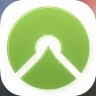
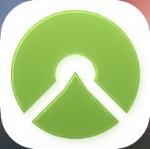

App di navigazione
Scegli l’app che preferisci per aprire il percorso e salvarlo offline.
Apri in Wikiloc  Apri in Komoot Apri in AllTrails Apri in Gaia GPS
← Torna alla home
Apri in Gaia GPS
← Torna alla home
Scegli l’app che preferisci per aprire il percorso e salvarlo offline.
Apri in Wikiloc  Apri in Komoot Apri in AllTrails
Apri in Gaia GPS
← Torna alla home